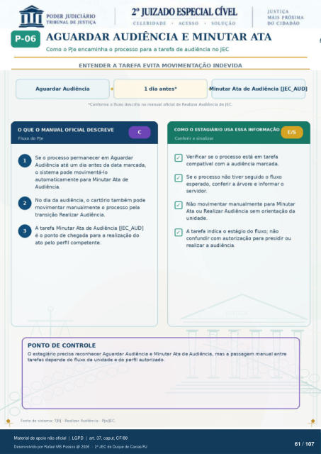

Transcrição automática em português, ainda não revisada. Confira grafia, prazos e termos jurídicos na imagem e no PDF antes de utilizar.
AGUARDAR AUDIÊNCIA E MINUTAR ATA
Como o PJe encaminha o processo para a tarefa de audiência no JEC
ENTENDER A TAREFA EVITA MOVIMENTAÇÃO INDEVIDA
Aguardar Audiência 1 dia antes*
inutar Ata de Audiência [JEC AU 'Contonne o fluxo descrito no manual oticial de Realizar Audiência do JEC.
O QUE O MANUAL OFICIAL DESCREVE
Fluxo do PJe Se o processo permanecer em Aguardar
Audiência até um dia antes da data marcada, o sistema pode movimentá-lo
automaticamente para Minutar Ata de Audiência.
No dia da audiência, o cartório também pode movimentar manualmente o processo pela
transição Realizar Audiência. A tarefa Minutar Ata de Audiência [JEC_AUD]
é 0 ponto de chegada para a realização do ato pelo perfil competente.
PONTO DE CONTROLE
COMO O ESTAGIÁRIO USA ESSA INFORMAÇÃO
Conferir e sinalizar Verificar se o processo está em tarefa
compatível com a audiência marcada. Se o processo não tiver seguido o fluxo
esperado, conferir a árvore e informar o servidor.
Não movimentar manualmente para Minutar Ata ou Realizar Audiência sem orientação da
unidade. A tarefa indica o estágio do fluxo; não
confundir com autorização para presidir ou realizar a audiência.
O estagiário precisa reconhecer Aguardar Audiência e Minutar Ata de Audiência, mas a passagem manual entre tarefas depende do fluxo da unidade e do perfil autorizado.
Fonte de sistema: TJRJ - Realizar Audiência - Ple/JEC.
Ver também o infográfico original (página 61)
